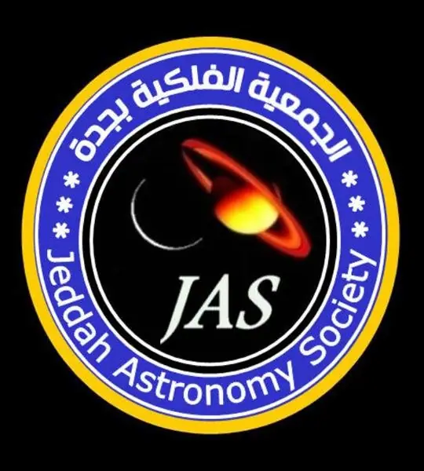
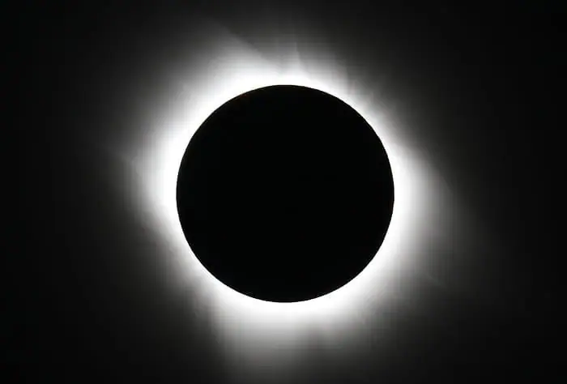
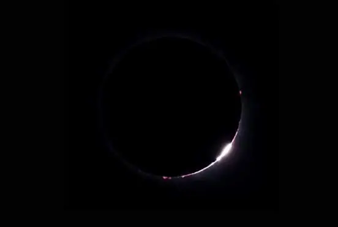
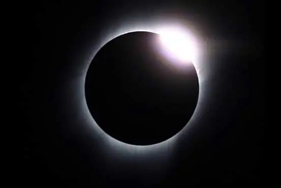

أخبار علمية ·
فلكية جدة: كسوف كلي للشمس غير مشاهد بالسعودية.. الثلاثاء المقبل

أفاد رئيس الجمعية الفلكية بجدة المهندس ماجد أبو زاهرة أن الكرة الأرضية تشهد يوم الثلاثاء 29 شوال 1440 الموافق 2 يوليو/تموز 2019 (حسب تقويم أم القرى) كسوفًا كليًا للشمس مشاهدًا في أجزاء من جنوب المحيط الهادي ووسط تشيلي ووسط الأرجنتين في حين سيشاهد جزئيا فقط في معظم جنوب المحيط الهادي وفي الإكوادور والبرازيل والأوروغواي وباراغواي.
وسوف تستغرق كافة مراحل الكسوف من بدايته إلى نهايته 4 ساعات و 55 دقيقة، وهذا الحدث لن يكون مشاهدًا بسماء السعودية أو الوطن العربي.
كسوف الشمس الكلي يحدث عندما تصطف الشمس والقمر والأرض على خط وأحد حيث يعبر القمر مباشرة بين الأرض والشمس وهذا الحدث نادر نسبيا لأن مدار القمر حول الأرض مائل بالنسبة لمدار الأرض حول الشمس، وعندما يحدث أن تنتظم تلك الأجسام الثلاثة في خط وأحد فإن القمر يغطي قرص الشمس وجميع المناطق التي ستقع ضمن ظل القمر ستشهد كسوفا كليا.
خلال هذا الكسوف سيكون حجم الشمس الظاهري أصغر بـ 1.6% من المتوسط، في حين يبعد القمر يومين من نقطة الحضيض أقرب نقطة في مداره من الأرض، مما يجعل حجمه الظاهري كبيرًا إلى حد ما.
ففي بداية ونهاية الكسوف سيكون الحجم الظاهري للقمر أكبر بنسبة 3.3 ٪ من المتوسط؛ وبالتالي سوف يغطي كامل الشمس مما يجعل هذا الكسوف كليًا.
وبشكل عام سيبدأ كسوف الشمس الجزئي على مستوى الكرة الأرضية فوق المحيط الهادي عند الساعة 7:55 مساء السعودية (4:55 مساء غرينتش) عندما سيبدأ القمر يتحرك أمام قرص الشمس.

وسيشهد أول موقع كسوف الشمس الكلي فوق المحيط الهادي عند الساعة 9:01 مساء السعودية (6:01 مساء غرينتش).
وسيعبر مسار الكسوف الكلي أثناء حركته فوق المحيط الهادي قرب جزر (بيتكيرن) عند 9:28 مساء بتوقيت السعودية (6:28 مساء غرينتش) حيث يبلغ عرض الكسوف الكلي 169 كيلومترًا في هذا الموقع، وسيستغرق الكسوف الكلي حوالي 3 دقائق و 33 ثانية، وستشهد الجزر كسوفًا جزئيًا حيث سيتغطى 97 ٪ من قرص الشمس.
وبعد ذلك يصل كسوف الشمس الكلي ذروته العظمى فوق المحيط الهادي عند الساعة 10:22 مساء بتوقيت السعودية (7:22 مساء بتوقيت غرينتش) ويستمر 4 دقائق و 33 ثانية، وهو بذلك أطول بدقيقتين و 40 ثانية من ذروة الكسوف الكلي الذي حدث قبل عامين في 2017، ولن يتمكن سوى الأشخاص في القوارب والسفن والطائرات من التقاط صور خلال أطول فترة زمنية له.
وسوف يصل الكسوف الكلي إلى البر الرئيسي شمال مدينة (لاسيرينا) في تشيلي، عند الساعة 11:39 مساء بتوقيت السعودية (8:39 مساء غرينتش) وهو في مراحله الختامية برغم ذلك ستظل مدة الكسوف الكلي دقيقتين و 34 ثانية في مركز المسار الكسوف الكلي الذي يبلغ عرضه 145 كيلومترًا، وفي مدينة (لاسيرينا) يستمر دقيقتين و 15 ثانية.
إضافة إلى أن مرصد (لاسيلا) التابع للمرصد الأوروبي الجنوبي في صحراء أتاكاما في تشيلي هو أيضا في مسار الكسوف الكلي؛ على الرغم من أنه يقع شمال خط مركز مسار الكسوف، إلا أن الكسوف الكلي سيدوم لمدة دقيقة و 51 ثانية، من 11:39 مساء إلى 11:41 مساء بتوقيت السعودية في هذا الموقع.
وسيعبر مسار الكسوف الكلي إلى الأرجنتين ويتحرك بسرعة الآن، ويمر شمال مدينة (ريو كوارتو) بعد الساعة 11:42 بتوقيت السعودية؛ ويبلغ عرض مسار الكسوف في هذه المرحلة حوالي 136 كيلومترًا، وسيستمر الكسوف الكلي لمدة دقيقتين و 14 ثانية في مركز مسار الكسوف، وفي مدينة (ريو كوارتو) دقيقة و 59 ثانية.
ويستمر مسار الكسوف يتحرك نحو الجنوب الشرقي، وسينتهي جنوب مدينة (بوينس آيرس) عند غروب الشمس الساعة 11:44 مساء بتوقيت السعودية (8:44 مساء غرينتش)، وفي هذه المرحلة سوف يستمر الكسوف الكلي لأكثر من دقيقتين وستغيب الشمس مكسوفة كليا.
وسوف يرصد آخر موقع على سطح الأرض الكسوف الجزئي في الساعة 12:50 بعد منتصف الليل بتوقيت السعودية (9:50 مساء غرينتش) وتنتهي كامل مراحل الكسوف.
وخلال الكسوف يمكن للراصدين الواقعين في مسار ظل الكسوف فقط رؤية العديد من الظواهر الفريدة، حيث سيشاهدون ظاهرة “خاتم الألماس” حيث يظهر ضوء الشمس ككتلة من طرف وأحد للقمر متصل بحلقة من الضوء وهو عبارة عن الغلاف الجوي للشمس يسطع حوله القمر.
ولأن سطح القمر ليس أملس تماما يمكن رؤية تأثير يسمى “خرزات بيلي” وذلك مباشرة قبل حدوث الكسوف الكلي بلحظات، وهي بسبب ضوء الشمس المندفع بين الجبال والأودية والتضاريس المختلفة على سطح القمر وهذه الحبيبات أو الخرزات من الضوء تتلألأ حول حافة القمر.
وأخيرا يحدث كسوف الشمس الكلي عندما يتم رؤية الغلاف الجوي للشمس المعروف باسم “الكورونا” أو “الهالة”، عندها سوف تتكيف عين الراصد مع مستوى الضوء المنخفض الجديد، ومع تكيف العين فإن الهالة الشمسية تصبح مرئية، هذه الهالة تتكون من غاز في غاية السخونة ومشحون كهربائيا – البلازما – تبلغ حرارتها 2 مليون درجة مئوية وتمتد ملايين الكيلومترات إلى الخارج نحو الفضاء.
الهالة الشمسية سوف تظهر لتبرز وتكبر وهذا فقط نوع من الخداع البصري، فالهالة الخارجية أخفت من الهالة الداخلية ومع تكيف العين مع الظلمة فإنها تصبح أكثر حساسية للضوء، لذلك يصبح الراصد قادرا على رؤية الأجزاء الخافتة من الهالة الخارجية ولذلك يبدو أن حجمها يزداد وعلى الرغم من ذلك فإن هذا التأثير البصري في غاية الروعة.
وهذا توقيت مثالي لدراستها كمصدر للتوهجات الشمسية والجسيمات المشحونة التي تتدفق من الشمس، وحتى الآن المعلومات قليلة عنها بسبب صعوبة رصدها في الأحوال العادية ولكن كسوف الشمس الكلي يمنح فرصة لمراقبتها.
وفي الوقت نفسه على الأرض سيلاحظ أن الطيور على سبيل المثال سيتوقف تغريدها خلال الكسوف الكلي لاعتقادها بحلول الليل وأيضا أزهار النهار تبدأ في إغلاق أوراقها والنحل يعود إلى مسكنه وقد يشعر الناس بانخفاض طفيف في درجة الحرارة عندما يتم تغطية مصدر الحرارة الرئيسي “الشمس”.
ولمراقبة كسوف الشمس يجب استخدام وسائل حماية العين مثل النظارات الخاصة بكسوف الشمس والتي تمنع أكثر من 99.99 % من ضوء الشمس والأشعة فوق البنفسجية والأشعة تحت الحمراء وهذه النظارات تجعل الشمس تظهر كقرص برتقالي أو أبيض في قبة السماء خاصة في مرحلة الكسوف الجزئي.
ولكن عند حدوث الكسوف الكلي وقرص الشمس مغطى تماما بالقمر يمكن النظر بالعين المجردة وحدها مباشرة ولكن يجب التذكير بأن مدة الكسوف الكلي لا تستمر طويلا.
وعلميا يستفاد من ظاهرة كسوف الشمس الكلي في عدة مجالات حيث أنها استخدمت في العام 1919 لإثبات صحة النظرية النسبية العامة لأينشتاين والتي تنبأت بحدوث حيود للضوء عندما يعبر بالقرب من الأجسام عالية الكتلة مثل الشمس وتم تأكيد صحة ذلك.
أما في السنوات الأخيرة أصبح كسوف الشمس الكلي يخضع لدراسة الهالة الشمسية التي تبلغ درجة حرارتها ملايين الدرجات المئوية على عكس سطح الشمس البالغ 5,500 درجة مئوية فقط ولا يوجد تفسير لذلك حتى الآن، لذلك تستغل هذه الظاهرة لمحاولة فهم هذه الظاهرة، ومحاولة معرفة السبب في قذف كميات ضخمة من البلازما إلى الفضاء عبر الانبعاث الكتلي الإكليلي، والبحث في إمكانية التنبؤ بالتوهجات الشمسية والمسبب لها، إضافة لإجراء عدة اختبارات متعلقة بطبقة الأيونوسفير وبالاتصالات اللاسلكية وغيرها.
جدير بالذكر أن هذا الكسوف الكلي للشمس سيتبعه بعد أسبوعين (منتصف ذي القعدة) في 16 يوليو/تموز 2019 خسوف جزئي للقمر سيكون مشاهدًا في كافة مناطق السعودية والوطن العربي.


منشور منقول من أرشيف موقع الاتحاد كما نُشر، مع تنظيف التنسيق.